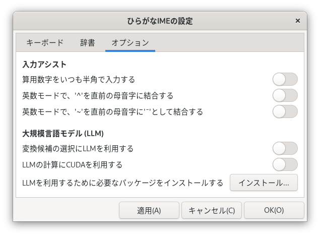
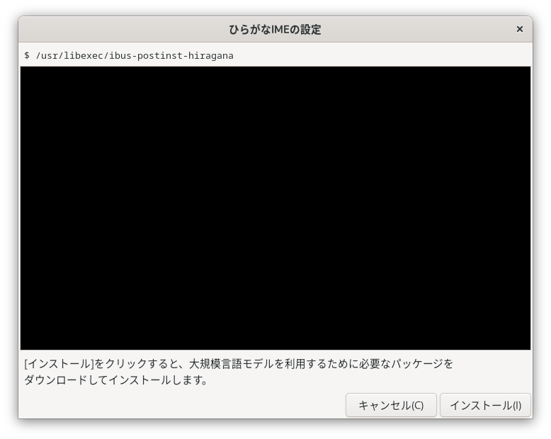

インストール方法
「ひらがなIME」を利用できるようにするには、つぎの手順でセットアップをすすめていきます。
ソフトウェア パッケージをインストールする
FedoraかUbuntuをつかっているときは、かんたんなコマンドで「ひらがなIME」をインストールすることができます。
Fedoraのばあい
Fedora用のソフトウェア パッケージはCoprプロジェクト「@esrille/releases」から提供しています。このCoprプロジェクトを有効にするには、いちど、コマンドラインからつぎのように実行します。
sudo dnf copr enable @esrille/releases
そのあとは、いつものように、dnfコマンドで「ひらがなIME」をインストールできます。
sudo dnf update
sudo dnf install ibus-hiragana
Ubuntuのばあい
Ubuntu用のソフトウェア パッケージはPPAレポジトリ「esrille/releases」から提供しています。このPPAレポジトリを有効にするには、いちど、コマンドラインからつぎのように実行します。
sudo add-apt-repository ppa:esrille/releases
そのあとは、いつものように、aptコマンドで「ひらがなIME」をインストールできます。
sudo apt update
sudo apt install ibus-hiragana
ソースコードからインストールするばあい
「ひらがなIME」をソースコードからビルドしてインストールするには、つぎのようにします。
git clone https://github.com/esrille/ibus-hiragana.git
cd ibus-hiragana
meson setup --prefix /usr _build [-Denable-dic=true] [-Denable-html=true]
ninja -C _build
ninja -C _build install
- -Denable-dic=trueを指定すると、漢字辞書とカタカナ辞書をビルドすることができます。
- -Denable-html=trueを指定すると、マークダウン ファイルからヘルプ用のhtmlファイルをビルドすることができます。
ビルドするときに必要なパッケージについては、debian/controlのBuild-Depends、あるいは、ibus-hiragana.specのBuildRequiresを参考にしてください。
Fedoraであれば、つぎのコマンドでビルドに必要なパッケージをインストールできます。
sudo yum-builddep ibus-hiragana.spec
Ubuntuであれば、つぎのコマンドでビルドに必要なパッケージをインストールできます。
sudo apt build-dep .
OSの入力ソースに追加する
ソフトウェア パッケージのインストールができたら、いちどコンピューターを再起動してください。
つづいて、OSの「入力ソース(※)」に「ひらがなIME」を追加します。入力ソースの設定のしかたは、デスクトップ環境によってすこし異なります。
※ キーボード配列やインプット メソッドのことをまとめて「入力ソース」とよんでいます。
GNOMEを利用しているとき
FedoraやUbuntuでは、GNOMEが標準のデスクトップ環境になっています。GNOMEを利用しているときは、GNOMEの「設定」をひらいて、「キーボード」の「入力ソース」に、「日本語 (Hiragana IME)」を追加します。

GNOME以外を利用しているとき
「IBusの設定」ウィンドウをひらいて、「入力メソッド」タブの「入力メソッド」に、
 日本語 - Hiragana IME
日本語 - Hiragana IME
を追加します。
「ひらがなIME」を有効にする
IBusでは、複数のIMEをきりかえて、つかうことができます。
「ひらがなIME」を有効するには、デスクトップ シェルの「キーボード メニュー」をひらいて、「日本語 (Hiragana IME)」をえらびます。「キーボード メニュー」は、トップバーの現在の入力メソッドを表示している部分（「

なお、「ひらがなIME」は直前に指定されていたキーボード レイアウトをつかって動作するようになっています。
- 日本語キーボードを利用するときは、まず、入力ソースから「日本語」を選択します。そのあとで、入力ソースから「日本語(Hiragana IME)」を選択します。
- 英語(US)キーボードを利用するときは、まず、入力ソースから「英語(US)」を選択します。そのあとで、入力ソースから「日本語(Hiragana IME)」を選択します。
使用するキーボードのレイアウトがみつからないときは、GNOMEの「設定」をひらいて、「キーボード」の「入力ソース」にレイアウトを追加してください。「ひらがなIME」は、いまのところ、「日本語」,「英語(US)」,「英語(Dvorak)」の３つのキーボード レイアウトをサポートしています。
メモ: キーボードは国や言語によってスイッチのレイアウトがことなります。日本では、日本語キーボードのほかに英語(US)キーボードも利用されています。英語(US)キーボードは、アメリカで一般的につかわれているキーボードです。USはUnited States (of America)の略です。英語キーボードでも、イギリスのものはアメリカのものとまたすこしキーボード レイアウトがちがいます。
Wayland用の設定をする
Ubuntu 21.04以降やFedora 25以降では、デフォルトで画面の描画にWaylandをつかうようになっています。Waylandは、ながくつかわれてきたXサーバーをおきかえるものです。
GNOMEではWayland用のインプットメソッドモジュールも新規に開発しています。ただ、こちらはまだ開発途中の部分がのこっています。Waylandで「ひらがなIME」を使用するときは、環境変数GTK_IM_MODULEにibusを指定してください。そのためには、つぎの行を ~/.bash_profile (Fedoraなど)か ~/.profile (Ubuntuなど)に追加して、ログインしなおしてください。
export GTK_IM_MODULE=ibus
このようにしておかないと、GNOME 45以前のシステムでは、ただしい周辺テキストの情報がIMEにおくられてきません。またGNOME 46以降でも、主要なアプリケーションソフトウェアの挙動がかわってしまうという問題がのこっています。GNOMEのバージョンは、GNOMEの[設定]ウィンドウをひらいて、[このシステムについて]—[システムの詳細設定]をしらべると確認できます。
「ひらがなIME」の基本的なセットアップはこれで完了です。さらにこまかな設定は、「ひらがなIMEの設定」ウィンドウでおこないます。
大規模言語モデルを利用するときの追加のインストール
「ひらがなIME」には、大規模言語モデルを利用して変換候補の選択をアシストする機能があります。この機能を有効にするには、つぎのようなものを追加でインストールする必要があります。
「ひらがなIME」は、ローカルのPython venvのなかで実行されています。このvenvにあわせて、上記のものをインストールするには、つぎのようにします。
- 「ひらがなIMEの設定」ウィンドウで、「変換候補の選択に大規模言語モデルを利用する」を有効にする。

- [適用]をクリックすると、つぎのようなウィンドウがひらきます。

- [インストール]をクリックすると、インストールがはじまり、そのログがウィンドウ内に表示されます。
- インストールが完了すると、[インストール]ボタンが[とじる]ボタンにかわります。
- [とじる]ボタンをクリックして、ウィンドウをとじます。
これでインストールは完了しています。ログインしなおすと、大規模言語モデルを利用した変換候補の選択機能が利用できるようになります。
注: 「ひらがなIME」は、~/.local/share/ibus-hiragana/venvにvenvをつくっています。tohoku-nlp/bert-base-japanese-v3のファイルは、~/.cache/huggingface/hub/models--cl-tohoku--bert-base-japanese-v3/のなかに保存されています。